Bendy and the Ink Machine is an indie horror game
developed by Joey Drew Studios. There are curently 2 main games
to the franchise and 1 more "off-to-the-side" type game. The first
game is Bendy and the Ink Machine, the second game is Bendy and Dark
Revival, and the the third game is Boris and the Dark Survival.
There are many, many charcters and wonderful lore to this game is
absolutely phenomenal. Click here to view the wiki.